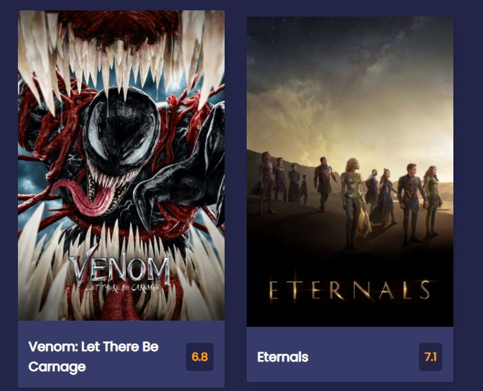
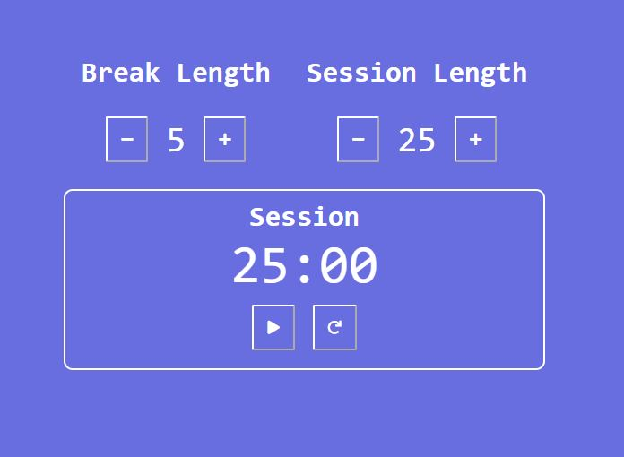
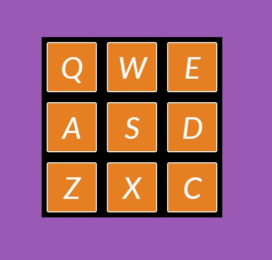

Projects



My Name is Elijah Walker
And I am a Web Developer

I am passionate about using critical thinking skills to solve simple and complex problems.
Working in the National Guard as an Officer, I get the opportunity to work directly with soldiers I supervise in a way that helps me learn how to solve problems that do not always have clear answers, but explain it to Soldiers in a way that we have a shared vision of the desired end goal.
I am looking for a position as a front end web developer because the process of seeing a code and improving it to evolve a product, or debugging one that already exists, drives me to learn more about coding language. I first learned the basics of coding in high school with some college lessons, but I learned and continue to learn by being self-taught and looking for opportunities.